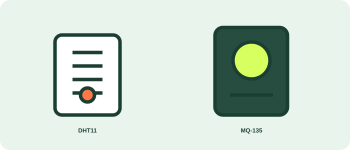
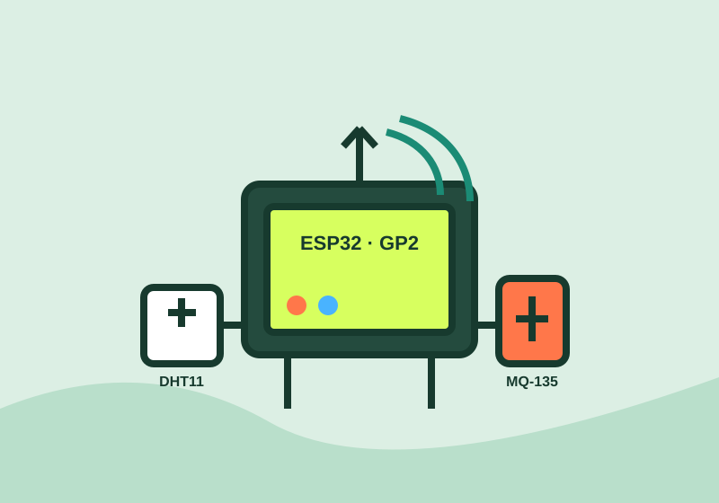
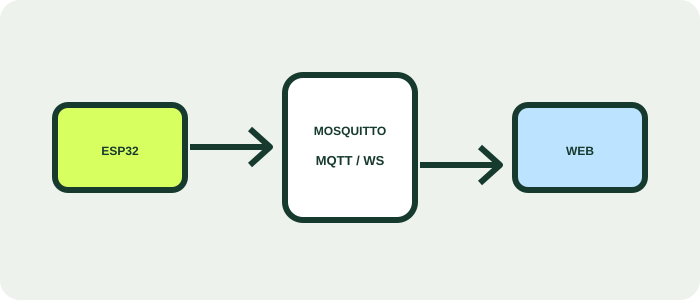

01
Coleta inteligente
O DHT11 mede temperatura e umidade. O MQ-135 acompanha a presença de gases e a qualidade do ar.
SESI SENAI VINHEDO · TURMA IOT
Uma estação conectada que acompanha temperatura, umidade e qualidade do ar. O ESP32 lê o ambiente e publica os dados via MQTT para este painel.


01
O DHT11 mede temperatura e umidade. O MQ-135 acompanha a presença de gases e a qualidade do ar.

02
As leituras seguem pelo Wi-Fi ao broker Mosquitto e chegam ao navegador por WebSockets.
03
LEDs físicos indicam níveis acima dos limites definidos: temperatura, umidade ou gás.
ARQUITETURA
MONITORAMENTO EM TEMPO REAL
Última atualização:
Temperatura
--°CAguardando leituraUmidade
--%Aguardando leituraQualidade do ar
--ppmAguardando leituraCANAIS MQTT
aulas/professortupi/#Dados recebidos automaticamente pelo broker local.